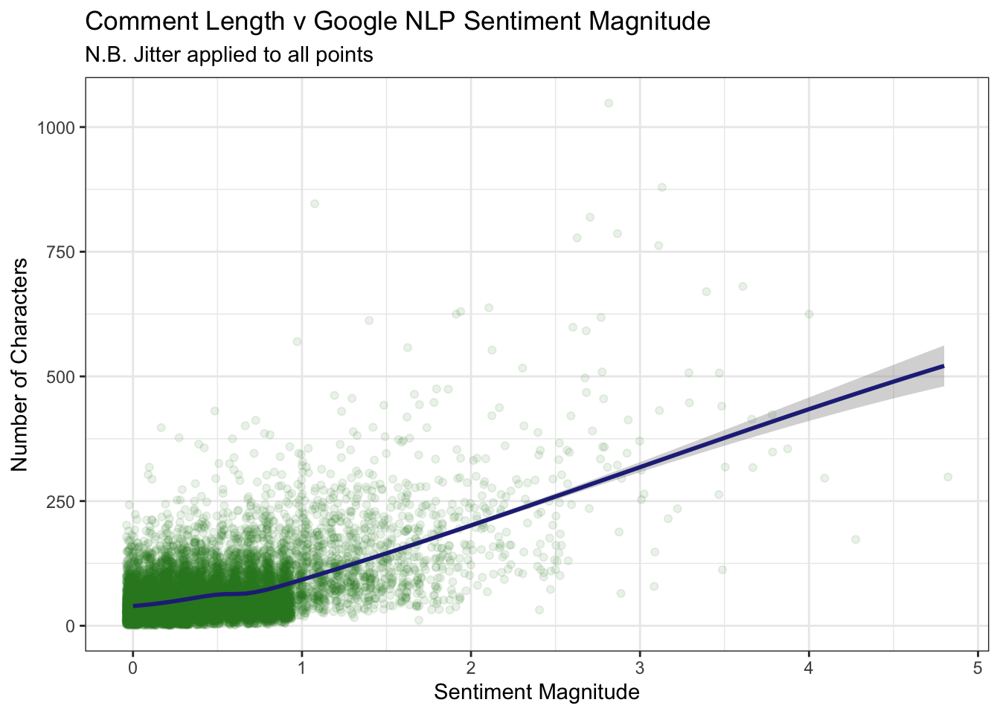
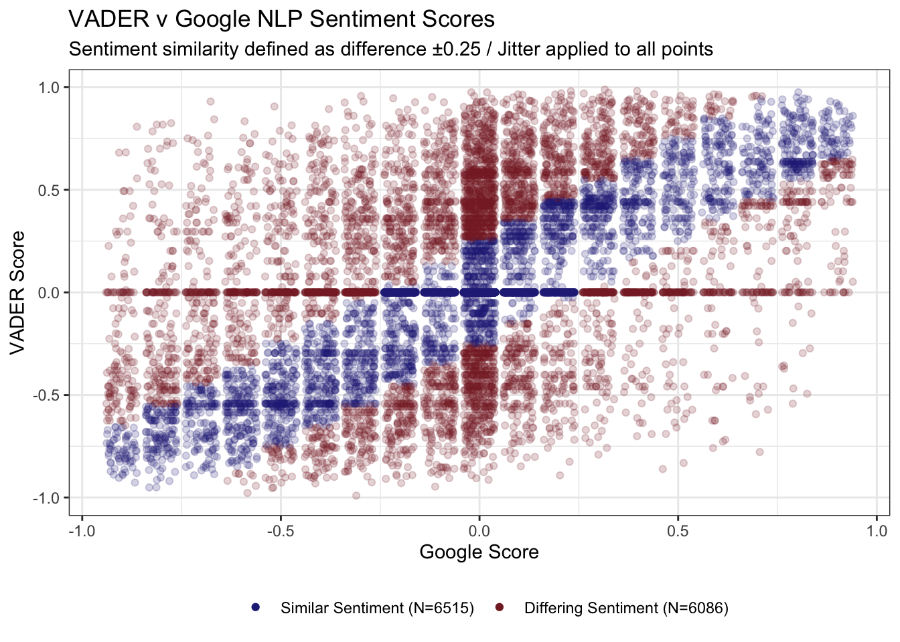
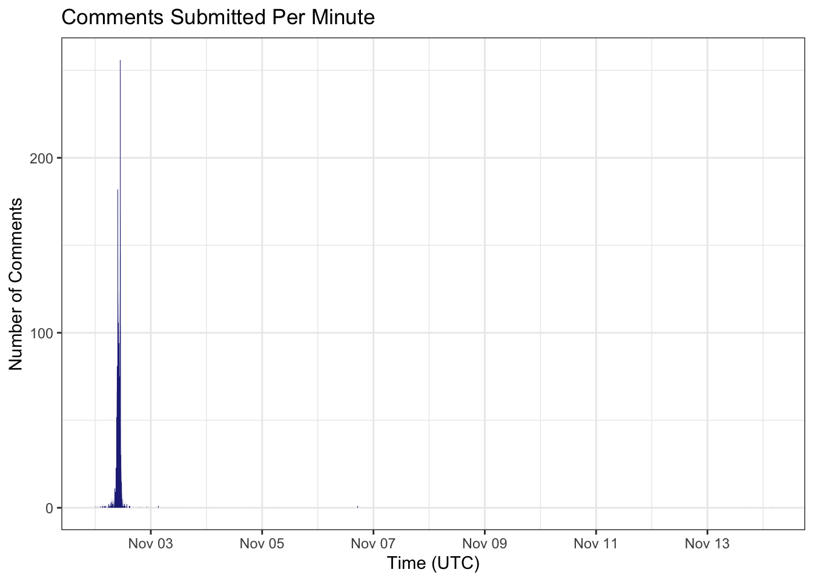
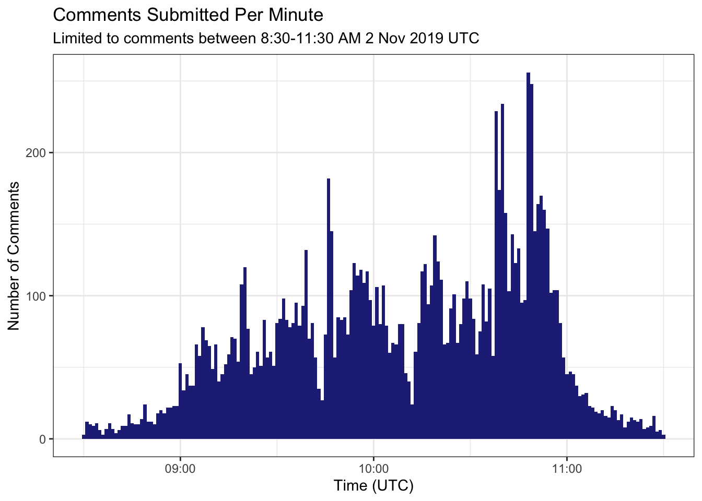
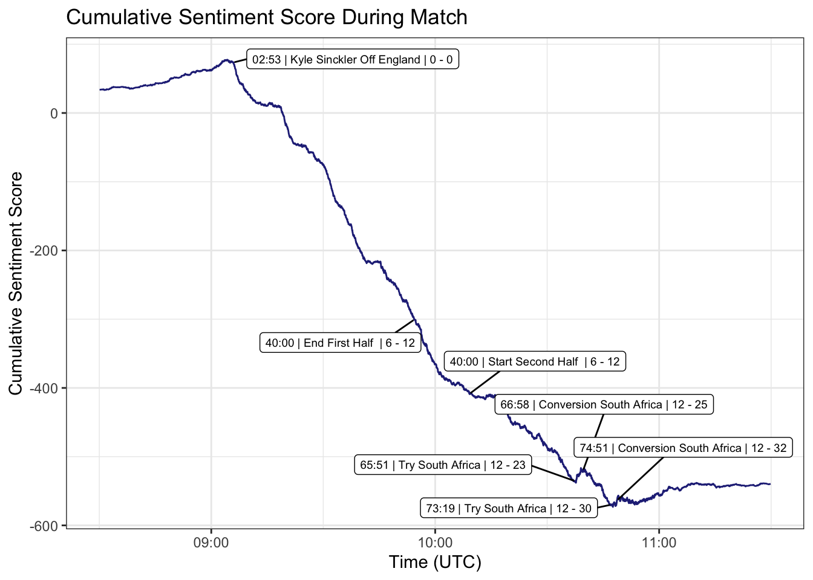
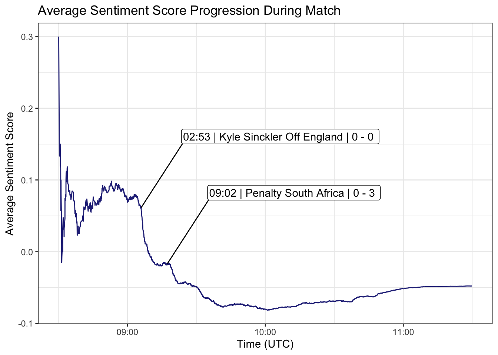
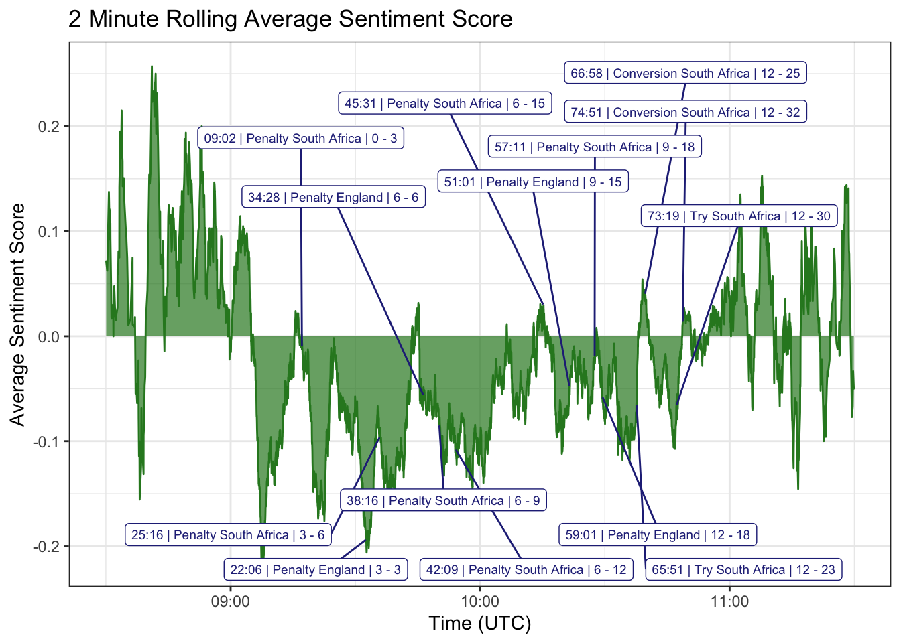
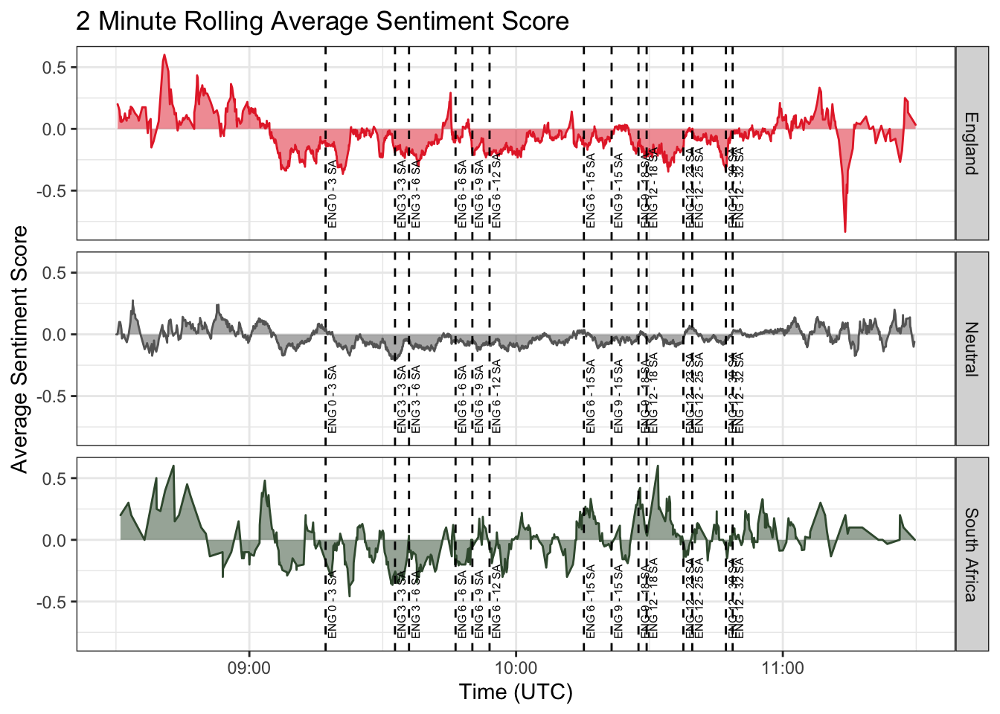
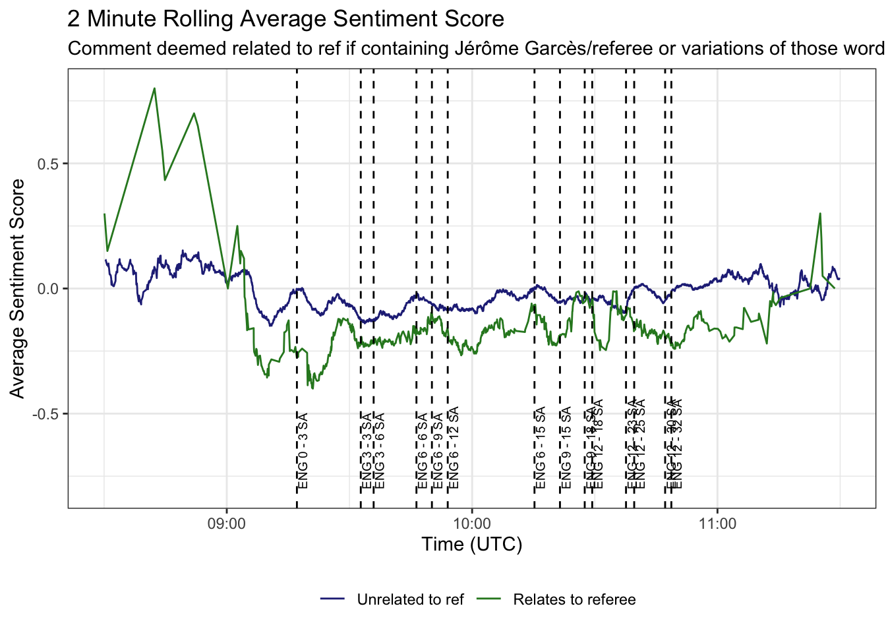

NB: Due to changes in the Google Cloud Natural Language API the sentiment scores in this report are no longer exactly the same as what is returned by the Natural Language API. However I consider the analysis is still valid.
With the 2019/20 novel coronavirus outbreak wreaking havoc on sport across the world I had been trying to come up with something new to look at with rugby data. Then along came the NFL Draft and I got inspiration from a really cool project by Caio Brighenti that involved using sentiment analysis on Reddit comments to track the mood of fans.
Whilst /r/nfl boasts over 1.9 million subscribers /r/rugbyunion counts only ~130,000 so I was concerned that I may not be able to get the volume of comments necessary to do any interesting analysis. Luckily the oft-maligned “Match Threads” are as popular as they are notorious, with several topping the 10,000 comment mark. With most of those coming shortly before and during the match that’s an average of 60+ comments per minute - plenty to work with!
So where better to start than the most commented Match Thread - the one for the 2019 Rugby World Cup Final between England and South Africa!
If you are not interested in how I did the analysis you can skip to the results.
I wanted to classify comments using their flair and Pushshift allowed me to access the flair the user had set at the time of posting, however the Reddit flair system seems to be somewhat convoluted and combined with the fact that /r/rugbyunion allows users to customise their flair text it turned out to be a little more convoluted process than expected.
Using PRAW and introspecting the flairs available in browser I compiled a list of possible “flair identifiers” which allow easy and reliable determination of the “base” flair the user has selected. This id value is the css-class if the flair has one otherwise it defaults to the “emoji” text.
For each flair id I classified the country, league, and club where possible. For example a “Harlequins” flair is classified as “England”, “Premiership”, “Harlequins”. In this way I hope to be able to classify a large number of comments by country, although this is obviously imperfect as some people have flairs for club teams from countries other than their own. Often people use custom flair text to highlight their support i.e. Ospreys/Wales and it may be possible to better classify people’s supported country by analysing that text, however it comes with more issues such as spelling mistakes, foreign spellings, slang etc.
N.B. As an aside this process made me realise that the /r/rugbyunion flair system is a mess and that some of the flairs even appear to be broken!
All match timeline data was scraped from the official Rugby World Cup website using Python and then curated by hand to decide what to plot.
For his NFL Draft analysis Caio used VADER for sentiment analysis. This free and open source tool is supposed to be specifically geared towards social media texts and is easy to set up and use with Python so it seemed like a good place to start. It works by scoring the percentage of the given text that is positive, neutral, and negative and providing a “compound” score of positive - negative which will range between -1 (extreme negative) and 1 (extreme positive). After cleaning up the comment data from pushshift I ran every comment through VADER, which is a relatively quick process, and decided to check out the most extreme comments by sentiment.
| VADER Sentiment | Comment |
|---|---|
| 0.9883 | On balance so far in the tournament, I think England have been the best team but obviously whoever wins on the day is the deserved winner. Rooting for England today. Fabulous team. Massive respect for your boys. I wouldn’t begrudge a SA win but I’ve become endeared to this England team. Good luck all. Can only imagine that you lot have no fingernails left! |
| 0.9815 | Born in South Africa. Raised in England, where I learnt to play rugby. In former world cups I’ve cheered on both teams, but I’m England all the way today. Either way I just hope we get a fantastic, clean game where we get to see some awesome rugby. Have fun everyone and drink responsibly. Just kidding. |
| 0.9806 | Frustratingly poor show from England but that’s largely due to just how well SA have played. Congratulations, I’m glad it’s you over the other potential winners, and it’s a great result for the neutrals who dislike us. Well done the bokke. For England, we need to question Young’s position in the team and our flexibility when playing to the ref. |
| 0.9753 | Happy World Cup Final everybody! Two great teams, loads of brilliant players, I hope it’s going to be a great match. I love rugby |
| 0.9751 | This is hard as an England supporter. But South Africa absolutely deserve this. They didn’t play boring rugby, they played better rugby. They out muscled and out played us. I am gutted watching this, but have to respect the opposition and say well played. Good on you. Now I’m going to wallow and feel rubbish for the rest of the day. |
| -0.9507 | See what happens when you keep kicked the ball away? Stop giving away possession of the ball or you’re going to give up a try. Absolute disgrace from every England player. Utterly embarrassing, they should all be ashamed. Absolutely pathetic. Biggest stage in rugby and you completely shit the bed. |
| -0.9509 | Cole should go off injured, go to uncontested scrums. It’s cheating but … Its going to get ugly soon if he doesn’t. Garces has been poor, England had been worse. |
| -0.9539 | Not saying the calls have been right or wrong in this game, but why no cards if every scrum has been so clear cut? it killed this first 60 minutes of the game, absolutely killed it. |
| -0.9776 | I find this depressing. What the hell happened today? We just couldn’t deal with the pressure applied by the occasion or by the oppo. South Africa nearly got turned over by a poor Wales side which was broken. And this England team has been completely ruined by them. I’m heartbroken and confused. |
| -0.9907 | There are documentaries about how actually the world is flat, or the Holocaust never happened. Just because there’s a documentary about something doesn’t make it fact. Yes, crimes and robberies on farmlands are a problem, but the whole racialisation of it is literal white nationalist propaganda, and you should be fucking ashamed of yourself for falling for it and repeating it to others. >Unsubstantiated claims that such attacks on farmers disproportionately target whites are a key element of the white genocide conspiracy theory and have become a common talking point among white nationalists worldwide. However, there are no reliable figures that suggest that white farmers are being targeted in particular or that they are at a disproportionate risk of being killed. The Government of South Africa, other analysts, and the right-wing Afrikaner rights group AfriForum maintain that farm attacks are part of a broader crime problem in South Africa and do not have a racial motivation. https://en.m.wikipedia.org/wiki/South_African_farm_attacks |
Hmmm. Some of this looks reasonable, certainly the “negative” comments all seem pretty negative however looking at “positive” comments I am a little unconvinced. Is a comment that expresses frustration at the way England played (albeit alongside congratulations for South Africa) really the third most positive comment from a thread in which one team just won the sport’s showpiece event?
One reason for this could be that VADER is optimised for tweet-like social media content i.e. limited to a relatively low number of characters, whereas Reddit comments can be much longer than this even if most of the ones in the quickfire match threads are short. Therefore one solution might be to split up each comment into sentences and gather the scores on a per-sentence basis. Although generating these scores would be simple enough I could not decide on what would be the best way to handle sentence level sentiment in relation to the overall analysis - for example should I recombine the sentences of a comment and generate an average score with some weighting? If so how should I determine the weighting? Instead I decided to look for a different option for sentiment analysis.
Natural Language Processing (NLP) is something the big tech giants have a keen interest in (more for deciding what they want to sell you than for telling people who the most toxic rugby fans on Reddit are) and the major cloud services (Google Cloud Platform, Amazon Web Service, Microsoft Azure) all have sentiment analysis offerings. Obviously they have a wealth of data and plenty of machine learning wizardry at their disposal, but unlike VADER that comes at cost. It was at this point I remembered I had £250 in Google Cloud credits!
The Python client libraries made it easy to knock together some code to make API requests for each comment and fetch the sentiment score, although there is no batch method and making ~12,000 calls synchronously took a little over 90 minutes. The code could be optimised to use multiple threads but for now I was not overly concerned with the wait time and it kept the code nice and simple.
Unlike VADER Google returns two numbers for sentiment analysis; like VADER a score of the sentiment ranging from -1 to 1 but also a “magnitude” value ranging from 0 to inf which indicates how much text was considered emotive. It should be noted that it is not about proportion of the text that is emotive so shorter comments can have lower scores than longer ones even if they are considered 100% emotive, something we can see if plot the magnitudes against the number of characters in the comment.

Effectively this allows us to tell if a comment with a sentiment score of 0 is truly neutral or actually a result of mixed sentiments within the comment. For example a comment such as “This was a really fun match but the referee was bad” might have an overall sentiment of 0 but a magnitude > 1 which would indicate there is emotional content in the comment. This isn’t possible with VADER as a score of 0 could be the result of 0 positive and negative or 0.5 positive and negative cancelling each other out. For more detail on these numbers you can visit the docs.
So how do the most positive and negative comments look with the Google classification? (I sorted first by the score and then the magnitude - so a sentiment of -0.9 with a magnitude of 1 is considered more negative than of -0.8 with a magnitude of 1.5)
| Google Sentiment | Google Magnitude | Comment |
|---|---|---|
| 0.9 | 1.9 | Really impressed by the phase defence in this area. It’s just excellent organisation and structures, the defence coach should take a bow tbh |
| 0.9 | 1.8 | The song is kind of about making England into a new Jerusalem, realy good stirring lyrics that (for me) actually get you pumped up. Good to properly shout when you’ve had a few beers at a sports game too! |
| 0.9 | 1.8 | Wonderful. Wonderfully wonderful. |
| 0.9 | 1.8 | The phenomenal SA scrum and that 5 minute incredible defence in the first half made the difference. Brilliant performance from the Boks. |
| 0.9 | 0.9 | Finally a final I can just sit and back and enjoy without getting nervous about the result! |
| -0.9 | 1.8 | I dont know whats worse. The fact I knew the ABEs would be out in force for this one, or the fact England collapsing has made them completely insufferable. |
| -0.9 | 1.8 | Bullshit. Stop trying to justify a horrible performance from an england team that was outclassed from the kickoff |
| -0.9 | 1.9 | Fucking useless Garces. Useless. |
| -0.9 | 1.9 | Fair play I guess, it doesn’t help when Garces is being utter shite and not calling SA’s offences, so they look more cynical than they are. That lack of holding on call when Itoje was trying to steal was disgraceful. |
| -0.9 | 1.9 | Nonsense. The semi final was orders of magnitude worse. |
Although we are talking about small sample sizes here - 10 comments out of 12,000+ - and there is a level of subjectivity to what is considered positive or negative I feel that these positive comments seem much more fitting of being the most positive than the ones selected by VADER. I particularly enjoy
Wonderful. Wonderfully wonderful.
/u/Open-Collar
How about we look at the comments which VADER and Google scored the most differently?
| Difference | Google Sentiment | Vader Sentiment | Comment |
|---|---|---|---|
| -1.7074 | -0.9 | 0.8074 | What an absolute shite match.. congrats SA, comfortably deserved to win, even if the reffing has been shocking |
| -1.6302 | -0.7 | 0.9302 | If England win this my English friends are going to be absolutely insufferable so please South Africa give me something to cheer for! |
| -1.6248 | -0.8 | 0.8248 | Isn’t it a horrible moment, you watch the try being scored but then it goes to TMO and you have to pray “LORD, don’t let Skeen fuck up this try.” |
| -1.6176 | -0.8 | 0.8176 | The call on the itoje steal was atrocious. SA might be winning the scrums but they are taking huge liberties with them and garces is letting it slide. |
| -1.6176 | -0.8 | 0.8176 | I was counting his success rate defending kicks and he literally has a 0% win rate against the kick and chase today. |
| 1.3316 | 0.5 | -0.8316 | England beaten at their own game: scrum… penalty, scrum… penalty, etc |
| 1.3423 | 0.8 | -0.5423 | My five year old nephew is learning all the bad habits |
| 1.3587 | 0.6 | -0.7587 | I dont remember who said this but it’s one of my favourite quotes of the world cup - “Faf is in every possible way- a little fucker”. |
| 1.3612 | 0.5 | -0.8612 | Nothing more beautiful than England fans crying about garces after the saffers have been crying about him all tournament |
| 1.4783 | 0.7 | -0.7783 | Beast is one scary man, and he’s fired up |
Again this is somewhat subjective but I feel comfortable in saying that comments Google has scored much more negatively than VADER (negative difference) are more negative in reality. However when we look at the comments that google scored more positively I think that it is less clear. Perhaps most perplexing is the comment “My five year old nephew is learning bad habits”, which VADER scored -0.54 and Google scored 0.8; I would personally regard the comment as more neutral than either of those scores and certainly not significantly positive as Google did.
Although we have just looked at the extremes in detail we can get an idea of how much VADER and Google NLP differed by comparing their sentiment scores for every comment.

About half of all comments are classified similarly (scores ±0.25) by both VADER and Google and only 1644 comments which were strongly strongly emotive by both Google and VADER (score >= 0.25 or score <= -0.25 ) were classified as having differing sentiment. This graph also clearly shows the difference between the granularity of scoring between VADER and Google, with Google NLP returning only 19 unique scores roughly steps of 0.1 between -1and 1 whilst VADER returned 1972 unqiue scores.
For this project I decided to proceed using the Google NLP scores.
N.B. If you haven’t read the section on the data, sentiment scores are generated using the Google Natural Language API document sentiment analysis.
Ok, let’s start by looking at how the number of comments submitted fluctuated during the match.

Oh dear, it seems the match thread received some comments more than a week after the game finished, which really skews the data on a datetime scale. Let’s try limiting to comments from 30 minutes before kickoff to 30 minutes after the final whistle - roughly 8.30am - 11.30am 2 Nov 2019 in UTC time.

Ah, that’s much better! There is a fairly steady flow of comments throughout the match with a slight increase towards the final whistle. There are two noticeable dips midway through the match but it is not apparent that there is any particular reason for them; the second one aligns reasonably with the kickoff of the second half, but the first is less aligned to any particular event. All following graphs will be limited to this time range.
Let’s take a look at how the overall sentiment of the thread progressed through the course of the match.

Wow. So during the build up to the game the thread was actually reasonably positive but that quickly turned after kickoff, roughly coinciding with Kyle Sinckler departing the field after a serious head-knock. The overall sentiment continued getting progressively more negative throughout the course of the game before slight bumps in positivity when South Africa scored their tries and after the final whistle. This would seem to reaffirm the common wisdom that match threads are not exactly pleasant places.
Whilst total sentiment is an easy measure to understand it might not be the best at actually capturing the mood; a heavily negative total could be the result of very negative comments but it may also be the result of a very large number of only slightly negative comments.

The average obviously takes a little while to accrue enough comments to become stable but once it does it mirrors what we saw with the totals - a slight upwards trend before kickoff followed by a sharp decline roughly coinciding with the Sinckler injury and another large drop after South Africa kicked their first points. It is worth noting that outside the initial large variability caused by a low comment count the average never gets outside ±0.1.
Can we improve at all on using the average? Match Threads are fast flowing posts in which people are reacting to a live event that often contains many ups and downs for fans on either side, as well as lulls in the action so do comments from before kickoff really bear relevance to comments made in the throes of a second half comeback? What if we were to look at a rolling average of the sentiment, considering only comments made in the previous 2 minutes?

This plot is a little more up and down with less smooth trends however we can see clear upward spikes in sentiment following the two South Africa tries as well as a fairly big rise in positivity after England drew level at 3-3, followed by another drop as South Africa quickly regained a lead.
But what if the Match Thread is mostly English fans? Obviously the overall sentiment and even the average the would likely be negative, considering the result.
Perhaps we can use the Reddit user flair system to help allocate comments to supporters of one nation or another? Now there are some caveats to this data, which you can find in the comment flair section about the data above, but essentially anyone with a club or country flair is deemed a supporter of the respective nation. First let’s take a look at which supporters submitted most comments in the Match Thread.
| Country | Number of Comments |
|---|---|
| Unknown | 4735 |
| England | 2652 |
| New Zealand | 1538 |
| Australia | 819 |
| Ireland | 733 |
| South Africa | 699 |
| Wales | 664 |
| Scotland | 195 |
| France | 192 |
| Canada | 105 |
| USA | 85 |
| Japan | 49 |
| Fiji | 49 |
| Malawi | 43 |
| Italy | 27 |
| Samoa | 10 |
| Brazil | 8 |
| Argentina | 7 |
| Namibia | 7 |
| Kenya | 5 |
| Uruguay | 5 |
| Spain | 5 |
| Switzerland | 3 |
| Hong Kong | 3 |
| Chile | 2 |
| Georgia | 2 |
| Netherlands | 1 |
| Mexico | 1 |
Unfortunately flair is not mandatory and the match threads tend to attract a lot of more casual users who are less likely to have set their flair, so it is not entirely surprising to see that around 1 in 3 comments cannot be attributed to any nation. England supporters do indeed make up the bulk of the flaired comments, whilst South Africa lags behind with the 6th most.
If we consider anyone not supporting England or South Africa as neutral (but let’s be honest we all know that real neutrals are few and far between) then do we see any difference in the sentiment across the match?

There are definitely differences between the fanbases; South African fans understandably were far more positive as they closed out the game with two tries in the last 10 minutes, whilst England fans positivity rose as they pulled the game back to 15-9 early in the second half. Interestingly though it is clear that partisans and neutrals alike were generally negative during the course of the match, with more positivity coming through following the final whistle.
If you frequent /r/rugbyunion you will know that despite the stereotype of referees being respected in rugby they come in for much criticism and abuse, perhaps nowhere more than in match threads. The referee for the 2019 showpiece event was Jérôme Garcès, a 9 year international level veteran with more than 50 tests under his belt. He was also the first frenchman to take charge of a World Cup Final and in recent years he and his fellow french referees have come under a lot of fire from fans of certain other nations for perceived differences in the way they referee games. So how did the match thread feel about the man with the whistle?

Poor old Jérôme. Once the whistle went and comments started flowing in, the average of those related to the referee was almost always more negative than the average of other comments. There are two brief spikes where Garcès receives more positivity than the average comment which seem to somewhat align with England’s last success on the scoreboard when the game was pulled to within a converted try but it is not entirely clear if it is anything more than random coincidence.
Intersestingly if we look at the average sentiment of comments relating to the referee by the allegiance of the commentor we see that neutrals were less negative than those with a horse in the race. Perhaps the referee is really just an easy target for frustrated fans?
| Country | Average Sentiment |
|---|---|
| England | -0.2185535 |
| South Africa | -0.1978723 |
| Neutral | -0.1646982 |
The data also allows us to take a look at the comments by user. So let’s start by seeing who the most active users were.
| User | Total Comments |
|---|---|
| [deleted] | 363 |
| boatswain1025 | 106 |
| tchiseen | 88 |
| WallopyJoe | 86 |
| RafiHouse | 79 |
| SloetSteenkamp | 70 |
| maxmynameismax | 66 |
| yyc_123 | 63 |
| AJV1Beta | 63 |
| contrafuckinband | 63 |
| Giveitawaygiveitaw4y | 53 |
So the top user is… [deleted]. Obviously that is not just one user, any comments which are moderator removed will show up with that user. So congratulations /u/boatswain1025! But who were the most extreme commentors on the day?
| User | Average Sentiment | Comments |
|---|---|---|
| ViolatingBadgers | 0.2217391 | 23 |
| Halfcaste_brown | 0.2166667 | 12 |
| zeusoid | 0.2125000 | 24 |
| c12022 | 0.2055556 | 18 |
| weareallscum | 0.1923077 | 13 |
| MyTeaJustWentCold | -0.3000000 | 15 |
| milesvtaylor | -0.3055556 | 18 |
| LogicKennedy | -0.3500000 | 16 |
| Wheynweed | -0.3909091 | 11 |
| JustAPigeon | -0.4333333 | 12 |
| Note: | ||
| Minimum 10 comments |
There were at least some users who bucked the overall trend of the thread and had reasonably positive averages of 0.2 or more, but at the negative end commentors were even more extreme, reaching averages of below -0.3.
Finally, we can take a look at which emojis were the most used in the match thread. This comes with a small caveat that I find working working with unicode in R a pain in the backside and I am still not entirely sure I have got it 100% correct.
| Emoji | Count |
|---|---|
| 😂 | 87 |
| 🇿🇦 | 46 |
| 🤣 | 29 |
| 😁 | 20 |
| ❤️ | 15 |
| 👍 | 11 |
| 🧂 | 11 |
| 👏 | 10 |
| ✅ | 8 |
| 👉 | 8 |
There were 74 unique emojis used a total of 365 times. Looking at the top 10 shows that they most commonly appear to be used for positive emotions - laughing, smiling, a love heart, thumbs up - with the South African flag also getting heavy usage. The outlier is perhaps the salt shaker emoji which is most likely used to indicate that someone else is “salty”.
Thanks for reading!
Comment Data
There are two main sources for Reddit data - pushshift.io and the official Reddit API - and there are use cases for both. Pushshift collects and stores comments as they are posted almost in real-time so (with a few exceptions) you can retrieve the original content of a comment even if it is later deleted. The Reddit API returns the current state of the comment allowing you to get an accurate score for the post and also to see whether a comment was deleted or removed.
For this project I decided to use both sources in combination. I used
Pythonto fetch and pre-process the data from both, utilising thePRAWlibrary to interact with the official API.The retrieved comment text contains markdown elements which might cause issues with sentiment analysis and so the
markdownandBeautifulSouppackages were used to convert comment text to plaintext.